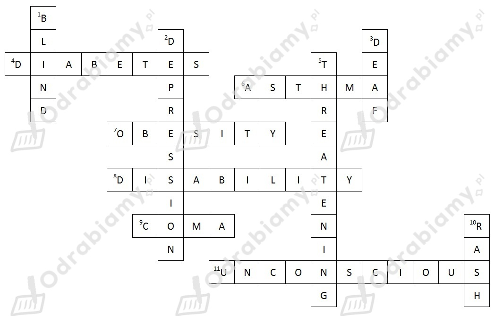

Rozwiązanie:

Uzupełnione hasła do krzyżówki (wstawione wyrazy zostały pogrubione):
Poziomo
4. Cukrzyca to dolegliwość, która wymaga, żebyś brał insulinę.
6. Astma to problemy z oddychaniem, które są zazwyczaj związane z alergiami (np. na zwierzęta, kurz, czy dym).
7. Otyłość to dolegliwość, która polega na posiadaniu niebezpiecznie dużej nadwagi.
8. Niepełnosprawność ogranicza ruch albo zmysły dotkniętej osoby.
9. Poważny wypadek może spowodować, że zapadniesz w śpiączkę i nie obudzisz się przez jakichś czas.
11. Uderzono go w głowę i znaleziono nieprzytomnego.
Pionowo
1. Kiedy nie widzisz, jesteś ślepy.
2. Kiedy czujesz się niesamowicie smutny, być może cierpisz na depresję.
3. Kiedy nie słyszysz, jesteś głuchy.
5. Bardzo poważne obrażenia, które mogą doprowadzić do śmierci, określono by jako obrażenia zagrażające życiu.
10. Czerwone ślady na twarzy, zazwyczaj wywołane alergią, nazywa się wysypką.
1. invention
2. decompose
3. examination
4. Radioactivity
5. advances
6. applied
7. recognition
8. contribution
Tłumaczenie uzupełnionych zdań (wstawione wyrazy zostały pogrubione):
1. Wynalezienie Internetu całkowicie zmieniło świat.
2. Problem z chusteczkami dla niemowląt polega na tym, że ich rozkład trwa dwieście lat.
3. To ważne, żeby lekarze przeprowadzali dokładne badania. Inaczej mogą coś pominąć.
4. Radioaktywność to wydzielanie promieniowania.
5. Naukowcy poczynili duże postępy w walce z rakiem.
6. On pracuje w naukach stosowanych, ale oryginalnie był lekarzem medycyny.
7. Maria Curie zyskała światowe uznanie za jej pracę.
8. Dostał Nagrodę Nobla, ponieważ wniósł ogromny wkład w medycynę.
1. sat-nav
2. image
3. store
4. locate
5. unplug
6. switch
7. range
8. battery
9. take
10. parts
Wyrazy 'break' i 'storage' nie pasują do żadnej luki.
Tłumaczenie uzupełnionych wyrażeń z tekstu:
1. this phone has in-built sat-nav - ten telefon ma wbudowaną nawigację satelitarną
2. it comes equipped with image editing software - jest wyposażony w program do edycji zdjęć
3. this phone lets you store up to 240 GB - ten telefon pozwala na przechowywanie do 240 gigabajtów danych
4. This phone can help you locate any of your devices - Ten telefon pomoże ci zlokalizować każde z twoich urządzeń
5. Forgot to unplug the charger? - Zapomniałeś wyjąć ładowarki z kontaktu?
6. you can switch off any plug socket in your home - możesz wyłączyć każde gniazdko w swoim domu
7. This truly is a top-of-the-range phone. - To naprawdę jest telefon najwyższej klasy.
8. you would expect the battery life to suffer - pewnie myślisz, że ucierpi na tym żywotność baterii
9. you can take it apart ... - możesz go rozłożyć ...
10. ... and buy spare parts easily online - ... i łatwo kupić części zapasowe przez Internet
1 - b (kwas)
2 - g (prędkość)
3 - i (jądro)
4 - c (wynik)
5 - a (algorytm)
6 - d (elektron)
7 - f (przełom)
8 - h (punkt widzenia)